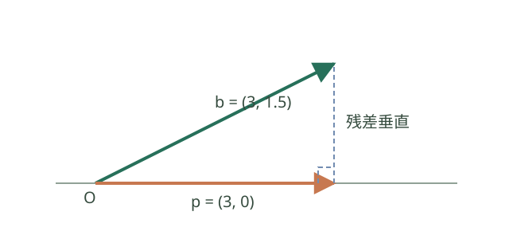

内积、正交与投影
初学者先理解什么？
内积给出长度和方向关系；非零向量内积为 0 时互相正交。投影是一个向量沿指定方向的部分，剩余向量与该方向垂直。

例如 \(b=(3,1.5)\) 投影到横轴得到 \(p=(3,0)\)，残差 \(b-p=(0,1.5)\) 与横轴垂直。投影方向必须由非零向量指定。
\[ \langle x,y\rangle=x^Ty,\quad\|x\|_2=\sqrt{x^Tx},\quad \cos\theta=\frac{x^Ty}{\|x\|\|y\|}. \]
夹角要求 x、y 非零。
- 柯西—施瓦茨：|x^Ty|≤‖x‖‖y‖；等号当且仅当线性相关。
- 三角不等式：‖x+y‖≤‖x‖+‖y‖。
- 非零正交向量组必线性无关。
- 正交矩阵 Q 满足 Q^TQ=I，故 Q⁻¹=Q^T，保持长度、内积和夹角。
内积基本不等式逐项证明。 若 y=0，柯西—施瓦茨不等式显然成立；若 y≠0，对 \(t=(x^Ty)/(y^Ty)\) 展开 \(0\le\|x-ty\|^2=\|x\|^2-(x^Ty)^2/\|y\|^2\)，便得 \(|x^Ty|\le\|x\|\|y\|\)。等号恰在 \(x=ty\) 时成立；连同 y=0，等号情形恰为 x、y 线性相关。再展开 \(\|x+y\|^2=\|x\|^2+2x^Ty+\|y\|^2\)，用柯西—施瓦茨估计交叉项并对两边取非负平方根，得到三角不等式。
若非零向量组两两正交且 \(\sum_i c_iv_i=0\)，两边与 \(v_j\) 点乘，得到 \(c_j\|v_j\|^2=0\)，故所有 \(c_j=0\)，该组线性无关。若 Q 为实正交方阵，则 \((Qx)^T(Qy)=x^TQ^TQy=x^Ty\)，从而长度保持；非零向量的夹角余弦也保持，且 \(Q^{-1}=Q^T\)。若 Q 是仅列正交的矩形矩阵，只能得到 \(Q^TQ=I\)，一般没有方阵意义下的逆。
向非零向量 u 的投影：
\[ \operatorname{proj}_u x=\frac{u^Tx}{u^Tu}u. \]
向列满秩矩阵 A 的列空间投影：
\[ p=Px,\qquad P=A(A^TA)^{-1}A^T. \]
若 Q 的列为该子空间的一组标准正交基，则 P=QQ^T。正交投影矩阵满足 P²=P、P^T=P，残差 x−p 与子空间正交。
投影公式的核验。 非零 \(u\) 上的投影写为 \(cu\)，要求残差与 \(u\) 垂直，即 \(u^T(x-cu)=0\)，所以 \(c=(u^Tx)/(u^Tu)\)。分母正因为 \(u\ne0\)。如果 \(A\) 列满秩，\(z^TA^TAz=\|Az\|^2>0\) 对非零 \(z\) 成立，因此 \(A^TA\) 可逆；对 \(p=A(A^TA)^{-1}A^Tx\)，有 \(A^T(x-p)=0\)，所以残差与每个列向量正交，亦与列空间正交。任意其他列空间向量 \(q\) 满足 \(x-q=(x-p)+(p-q)\)，两项正交，由勾股定理 \(\|x-q\|^2=\|x-p\|^2+\|p-q\|^2\ge\|x-p\|^2\)，所以它确为最近点。直接相乘可得 \(P^2=P\)、\(P^T=P\)；当 \(Q^TQ=I\) 且 \(Q\) 的列张成同一空间时，代入 \(A=Q\) 得 \(P=QQ^T\)。
8.1 Gram–Schmidt 与 QR
\[ u_k=v_k-\sum_{j<k}(q_j^Tv_k)q_j,\qquad q_k=u_k/\|u_k\|. \]
输入线性无关时每个 u_k 非零。A 列满秩时可分解 A=QR，Q 列正交归一，R 为可逆上三角矩阵；数值实现通常采用更稳定的正交化方法。
Gram–Schmidt 与 QR 的核验。 假设之前的 \(q_j\) 已单位正交，计算 \(q_i^Tu_k=q_i^Tv_k-\sum_{j<k}(q_j^Tv_k)q_i^Tq_j=0\)。若 \(u_k=0\)，则 \(v_k\) 可由前面的 \(q_j\) 表示，从而落在前面 \(v_j\) 张成空间中，与输入线性无关矛盾；故可将其除以长度得到 \(q_k\)。每个 \(v_k\) 由 \(q_1,\ldots,q_k\) 线性表示，把系数放入第 \(k\) 列得到上三角 \(R\)，因各 \(u_k\ne0\)，对角元非零，所以 \(R\) 可逆。
投影公式的推导：把力分解到指定方向
设非零向量 \(u\) 为前进方向，向量 \(x\) 表示受力。寻找最接近 \(x\) 的方向分量 \(cu\)，使残差 \(x-cu\) 垂直于 \(u\)：
\[ u^T(x-cu)=0\quad\Rightarrow\quad c=\frac{u^Tx}{u^Tu}. \]
因此投影是 \((u^Tx/u^Tu)u\)。这个公式也用于信号分解和最小二乘；分母非零依赖 \(u\ne0\)。
空间向量、距离和夹角
空间直角坐标中 \(\mathbf a=(a_1,a_2,a_3)\)，\(\mathbf a\cdot\mathbf b=a_1b_1+a_2b_2+a_3b_3\)，\(|\mathbf a|=\sqrt{a_1^2+a_2^2+a_3^2}\)。两非零向量夹角满足 \(\cos\theta=(\mathbf a\cdot\mathbf b)/(|\mathbf a||\mathbf b|)\)。直线方向向量平行可判线线方向一致；平面法向量垂直于平面内任意方向向量。两平面夹角可用法向量夹角的锐角或直角解释；直线不垂直于平面时，线面角可由直线与其在平面上非零射影的锐角或零角确定。直线垂直于平面时射影方向为零，线面角为 90°，不能计算与零向量的夹角。
点 \(P\) 到平面 \(Ax+By+Cz+D=0\) 的距离如下；此处要求法向量非零，即 \(A^2+B^2+C^2>0\)： \[ d=\frac{|Ax_P+By_P+Cz_P+D|}{\sqrt{A^2+B^2+C^2}}. \] 这是点到平面的法向投影长度。空间几何向量化的流程是：建立坐标系、写出方向/法向量、用点积表达垂直或夹角，最后核对角的定义范围。建筑净空、最短距离和光线夹角都可转成该类计算。